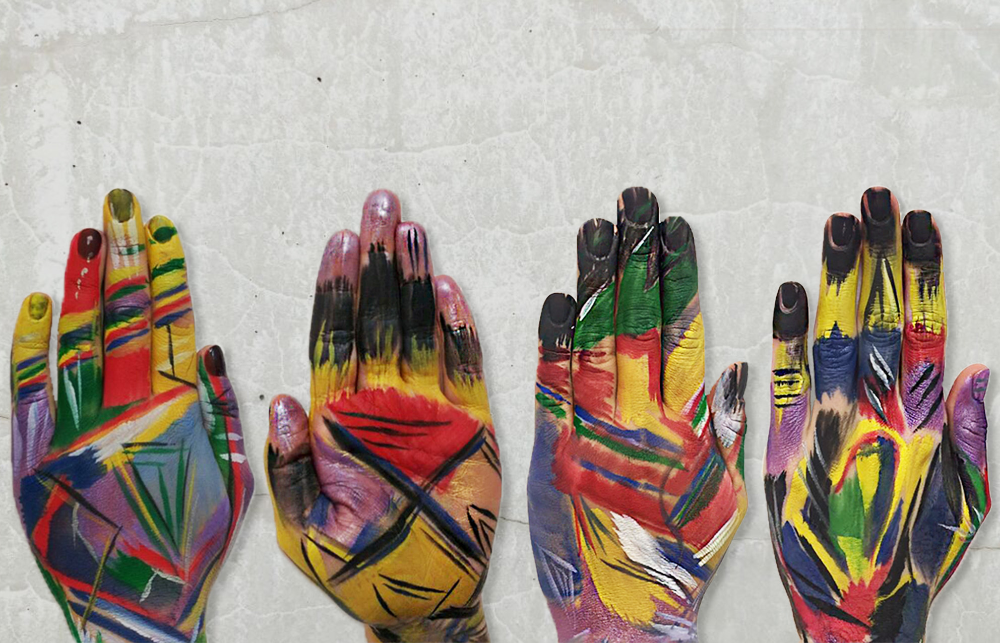

תקשורת חזותית
אימפרוביזציה עם כותרת
עבודה זו נעשתה בקבוצה, אני ועוד שתי סטודנטיות. שמה הוא "אימפרוביזציה עם כותרת" זוהי אינטרפרטציה שלנו ליצירתו של וסילי קנדינסקי. שמה של היצירה המקורית הוא "אימפרוביזציה עם כותרת".
בקורס תקשורת חזותית התייחסנו לשני היבטים של התמונה המקורית (בה ניתן לצפות בסרטון) ובאמצעותם הגענו לתוצאה הסופית של היצירה שלנו: רובד עובדתי ורובד פרשני.
רובד עובדתי:
בציור ניתן ליראות במבט ראשון פרץ של צבעים, בהתבוננות מעמיקה ניתן להבחין בין הצבעים העזים לצבעים החלשים. הציור הוא צבע שמן על בד. הצורות אינן סימטריות ויש קווים נורא לא ברורים לעומת קווים מאוד ישרים וחד משמעים. אפשר ליראות שבין כל צורה כמו משולש ומרובע יש ציור מופשט בכתמי צבע , התמונה מאוד דינמית ישנם קווים אלכסוניים ויש כתמים בודדים של שחור היוצרים קונטרסט לעומת הצבעים העזים.
רובד פרשני:
בהסתכלות שלנו על התמונה במבט ראשוני חשנו כי הצבעים מבטאים "סערת רגשות" שביטא האומן, "הבלאגן" ששורר בתמונה מבטא תקופה מסוימת שבה האומן חי או חווה . אנחנו מרגישות כי התמונה מורכבת מכמה תמונות קטנות כמו קולאז' של תמונות שחיבר האומן. על אף שהציור נראה מופשט נראה שיש הגיון בתמונה.
